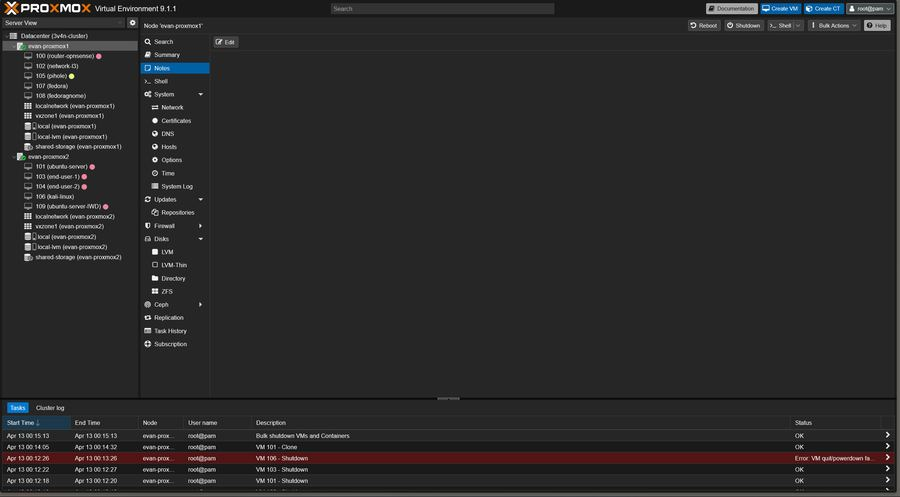
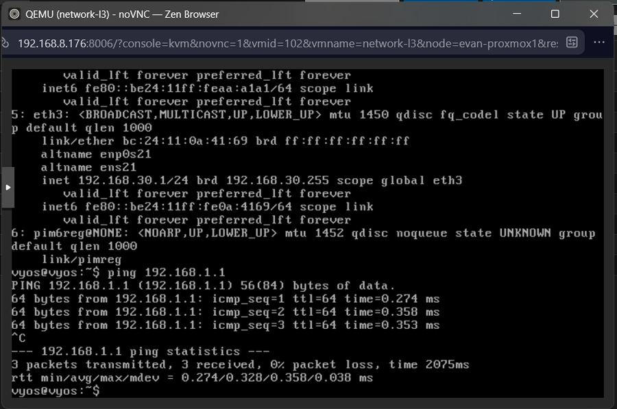
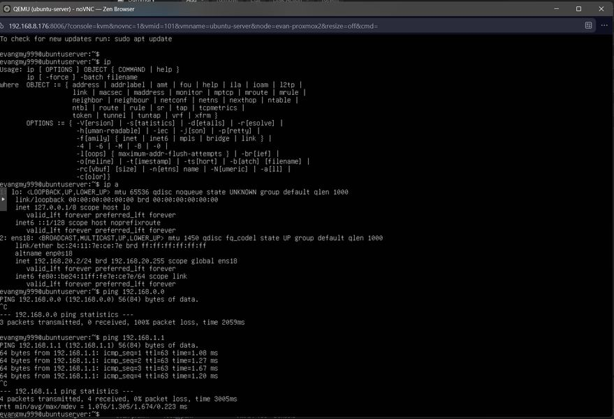
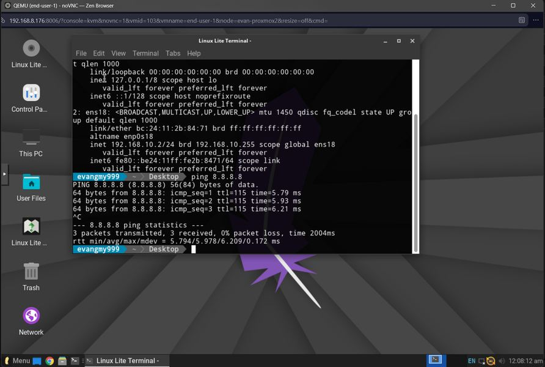

FYP
1B
1B
CANDIDATE
Gan Ming Yan Supervisor: Ts. Dr. Khoo Li Jing
Gan Ming Yan Supervisor: Ts. Dr. Khoo Li Jing
PROBLEM STATEMENT
- 01Computer science students at the University of Wollongong Malaysia lack access to a dedicated, production-grade cybersecurity and networking laboratory. Existing solutions are too costly to license at university scale, too limited in realism, or unavailable for safe, isolated practice of adversarial security scenarios.
- 02There is a persistent gap between the practical skills demanded by industry and the hands-on competencies graduates can demonstrate. Without a structured lab, students cannot develop proficiency in topologies, firewall policy, routing protocols, or responding to security events in a controlled environment.
- 03Lab D hardware remains underutilised. Repurposing it through open-source virtualisation would maximise existing assets, eliminate recurring licensing costs, and keep a self-hosted platform under institutional control.
RESEARCH OBJECTIVES
- RO1To design and deploy a Proxmox VE-based virtualisation cluster using the existing hardware in Lab D, capable of hosting multiple concurrent student virtual machine sessions.
- RO2To provide realistic student networking workloads, using OPNsense and VyOS, from classroom PCs without granting hypervisor administrator rights.
- RO3To provide lecturer-facing observability of laboratory traffic and security events using ntopng, d3.js (Cluster Mesh), and Wazuh.
- RO4To develop a set of structured, guided lab exercises covering core networking topics at Basic, Intermediate, and Advanced difficulty levels.
- RO5To evaluate the usability and educational difference of the platform through user acceptance testing with student participants and structured feedback collection.
- RO6To produce comprehensive technical documentation, including setup guides, lab manuals, physical and logical network topology diagrams, and a final project report.
RESEARCH QUESTIONS
- RQ1How can the existing hardware assets in Lab D at UOWM be repurposed into a scalable, multi-node virtualised cybersecurity and networking education platform using open-source tools?
- RQ2To what extent does a virtualised lab environment using production-grade tools such as OPNsense and VyOS provide a more realistic and effective learning experience compared to simulation-based alternatives such as Cisco Packet Tracer or hardware?
- RQ3Can lecturers observe live traffic and security events on ntopng, d3.js (Cluster Mesh), and Wazuh during a class, without placing those dashboards on the student path?
- RQ4What structured lab exercises and guided scenarios are most effective in developing students' practical competencies in networking at progressively higher skill levels?
- RQ5How usable and accessible is the platform for students with varying levels of prior technical experience, as assessed through user acceptance testing?
Research Design Table (RDT)
| No. | Research Question | Research Objective | Methods | Expected Outcome |
|---|---|---|---|---|
| RQ1 | How can the existing hardware assets in Lab D at UOWM be repurposed into a scalable, multi-node virtualised cybersecurity and networking education platform using open-source tools? | RO1. To design and deploy a Proxmox VE-based virtualisation cluster using the existing hardware in Lab D, capable of hosting multiple concurrent student virtual machine sessions. | Literature ReviewStudy Existing SystemsDeploy on Lab D | An operational Proxmox VE cluster on the Acer and Dell nodes, able to host concurrent student guests, with documented physical and logical topology. |
| RQ2 | To what extent does a virtualised lab using OPNsense and VyOS provide a more realistic and effective learning experience compared with Cisco Packet Tracer or hardware? | RO2. To provide realistic student networking workloads, using OPNsense and VyOS, from classroom PCs without granting hypervisor administrator rights. | ObservationStudent questionnaire | Students configure a LabEye four-guest overlay (OPNsense, VyOS, Ubuntu, Windows) from Lenovo PCs. Realism is compared with prior Packet Tracer or hardware experience. |
| RQ3 | Can lecturers observe live traffic and security events on ntopng, d3.js (Cluster Mesh), and Wazuh during a class, without placing those dashboards on the student path? | RO3. To provide lecturer-facing observability of laboratory traffic and security events using ntopng, d3.js (Cluster Mesh), and Wazuh. | Lecturer functional cases | Staff can open ntopng, d3.js (Cluster Mesh), and Wazuh on VLAN 900. Students on the Networking sitting do not. |
| RQ4 | What structured lab exercises and guided scenarios are most effective in developing students' practical competencies in networking at progressively higher skill levels? | RO4. To develop a set of structured, guided lab exercises covering core networking topics at Basic, Intermediate, and Advanced difficulty levels. | Guided lab sheetsNetworking sitting | A guided Networking exercise at Basic and Intermediate scope. Advanced packs remain future work. One sitting cannot rank three levels. |
| RQ5 | How usable and accessible is the platform for students with varying levels of prior technical experience, as assessed through user acceptance testing? | RO5. To evaluate the usability and educational difference of the platform through user acceptance testing with student participants and structured feedback collection. | Questionnaire / SurveyUser Acceptance Testing | UAT data and structured comments from consented students after the Networking exercise. |
| — | Documentation is an objective without a numbered question. | RO6. To produce comprehensive technical documentation, including setup guides, lab manuals, physical and logical network topology diagrams, and a final project report. | ReportTopology diagrams | Final project report with physical and logical topology diagrams. A standing student handbook remains a product gap. |
Project Scope — Table 1
The Intermediate column is the implemented laboratory. Advanced is future work and is not claimed as a result of this sitting.
| Feature | Basic | Intermediate (this project) | Advanced (future) |
|---|---|---|---|
| Networking | Student OPNsense: DHCP, DNS, and NAT; ping between hosts | LabEye four-guest overlay: student OPNsense, VyOS static routing, Ubuntu Server, and Windows | Policy-based routing, VPN tunnels, multisite topology |
| Security | Isolated student overlay; default deny between exercise VLANs | IEEE 802.1Q VLANs 90, 900, 901, 911, and 921. Only documented teaching paths (blue to victim, red to victim). University LAN blocked from staff dashboards. | VLAN 931 honeypot class; standing red/blue sitting |
| Monitoring | Staff open ntopng and see live traffic | SPAN on switch port 18 plus NetFlow into ntopng; d3.js (Cluster Mesh); Wazuh on the infrastructure plane. Students do not open these pages. Tokens stay in Express. | Student-facing observability exercise |
| Network labs | Guided ping and NAT on the four-guest combination | One Networking exercise from Lenovo PCs through LabEye. Students configure OPNsense and VyOS without hypervisor administrator rights. | Extra lab packs: pen-test, IDS/IPS, SOC-style sittings |
| Firewall | Student OPNsense rules on the overlay | Opnsense-main as the laboratory firewall and Kea DHCPv4 server; a disposable student OPNsense in each LabEye combination | IDS/IPS tuning; extra VPN gateway |
| Documentation | Author setup notes | This report plus physical and logical topology diagrams. A standing student handbook was requested and is not yet an operating product. | Standing lab manuals and video walkthroughs |
TOOLS & TECHNOLOGY
CONCEPTUAL FRAMEWORK — USER INTERACTION FLOW

CLICK TO ENLARGE
HOW MY WORK ENABLES OTHERS
I'm essentially the infrastructure guy — if the system base is not built, others are unable to build on top of mine. The virtualisation cluster, virtual networking layer, and monitoring stack all serve as the foundation upon which the other FYP projects depend.
MOCKUP — SYSTEM IN ACTION

Proxmox VE

OPNsense — Router/Firewall VM

VyOS — Layer-3 Network Router

Ubuntu Server — Ping Test

End-User VM (Linux Lite)

Kali Linux